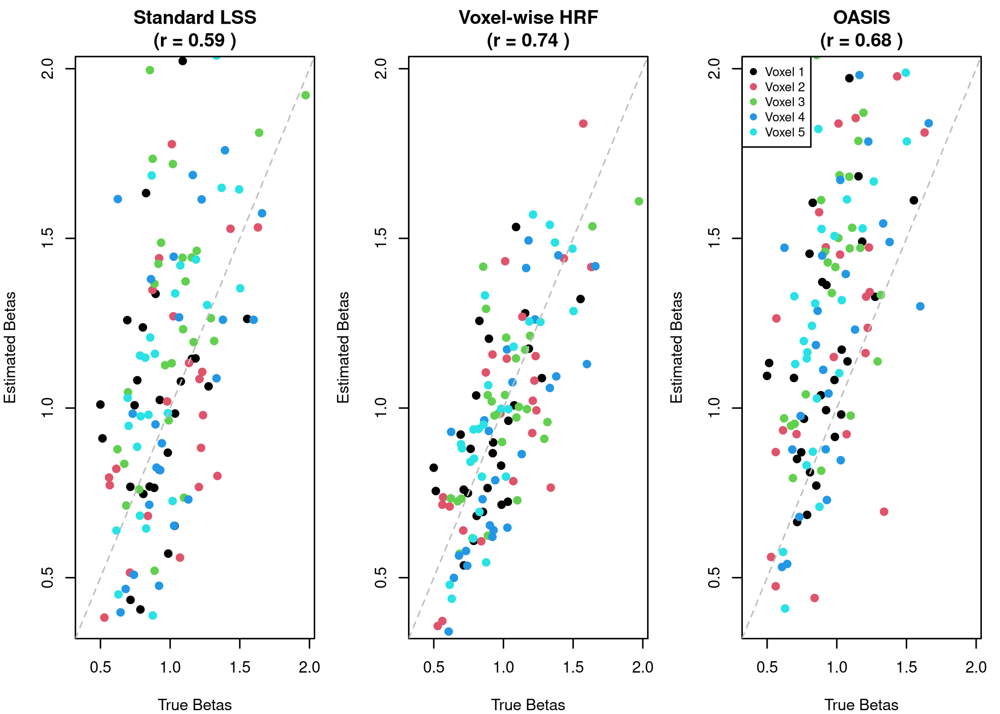

Voxel-wise HRF Modeling with fmrilss
fmrilss Development Team
2025-09-15
voxel-wise-hrf.RmdWhy HRF Variability Matters
Picture this scenario: you’re analyzing fMRI data from a study comparing young and older adults performing a memory task. You notice that in certain brain regions, particularly those with known vascular changes in aging, your standard analysis seems to systematically underestimate activation in the older group. Could this be a genuine difference in neural activity, or might it reflect age-related changes in the hemodynamic response itself? This question lies at the heart of voxel-wise HRF modeling.
The hemodynamic response function represents the complex cascade of physiological processes that translate neural activity into the BOLD signal we measure with fMRI. While we often assume a canonical HRF shape across the entire brain, reality is more nuanced. Different brain regions have different vascular architectures, neural-vascular coupling can vary with age and disease, and even within healthy young adults, there’s substantial variability in HRF characteristics across cortical areas and individuals.
This vignette will guide you through the process of accounting for HRF variability in your LSS analyses. We assume you’re already familiar with the basic LSS concepts covered in the getting started vignette, understand the fundamentals of the hemodynamic response function, and are comfortable working with matrices in R. With these foundations, we’ll explore how voxel-wise HRF modeling can improve the accuracy of your trial-wise beta estimates.
library(fmrilss)
library(fmrihrf)
#>
#> Attaching package: 'fmrihrf'
#> The following object is masked from 'package:stats':
#>
#> deriv
set.seed(123)
# Helper function to create design matrix using fmrihrf API
# (design_matrix is not exported from fmrihrf, so we create a wrapper)
design_matrix <- function(sframe, conditions, tr_per_trial = FALSE) {
# Get block info from sframe
n_blocks <- length(fmrihrf::blocklens(sframe))
if (tr_per_trial) {
# Create trial-wise design (one column per trial)
X_list <- list()
for (cond in conditions) {
n_trials <- length(cond$onsets)
# Each trial gets its own regressor
X_trial <- fmrihrf::regressor_design(
onsets = cond$onsets,
fac = factor(1:n_trials), # Each trial is its own level
block = rep(1, n_trials), # Assume single block for simplicity
sframe = sframe,
hrf = cond$hrf,
duration = if (!is.null(cond$duration)) cond$duration else 0,
span = if (!is.null(cond$span)) cond$span else 30,
precision = 0.1,
method = "conv",
summate = FALSE # Don't sum across trials
)
X_list[[length(X_list) + 1]] <- X_trial
}
X <- do.call(cbind, X_list)
} else {
# Create aggregate design (one column per condition)
X_list <- list()
for (cond in conditions) {
n_trials <- length(cond$onsets)
# All trials in same condition get summed
X_cond <- fmrihrf::regressor_design(
onsets = cond$onsets,
fac = factor(rep(1, n_trials)), # All trials same level
block = rep(1, n_trials),
sframe = sframe,
hrf = cond$hrf,
duration = if (!is.null(cond$duration)) cond$duration else 0,
span = if (!is.null(cond$span)) cond$span else 30,
precision = 0.1,
method = "conv",
summate = TRUE # Sum across trials in condition
)
X_list[[length(X_list) + 1]] <- X_cond
}
X <- do.call(cbind, X_list)
}
list(X = as.matrix(X))
}Building Intuition Through Simulation
The best way to understand the impact of HRF variability is to see it in action. Let’s create a controlled simulation where we know the ground truth and can observe how different analysis approaches perform.
Creating Data with Variable HRFs
We’ll simulate an experiment with rapid stimulus presentation, where different voxels have subtly different HRF characteristics. This mimics what might happen when analyzing data from regions with different vascular properties:
# Simulation parameters
n_time <- 200 # Time points
n_trials <- 10 # Number of trials
n_vox <- 5 # Number of voxels
TR <- 1.0 # Repetition time
# Create event design with rapid presentation
events <- data.frame(
onset = seq(10, 180, length.out = n_trials),
duration = rep(1, n_trials),
condition = rep("task", n_trials)
)
# Create sampling frame
sframe <- fmrihrf::sampling_frame(blocklens = n_time, TR = TR)
# Generate voxel-specific HRF parameters
# Each voxel has slightly different HRF characteristics
voxel_hrfs <- list()
for (v in 1:n_vox) {
# Vary peak time (tau) and width (sigma) across voxels
tau_shift <- (v - 3) * 0.5 # Range: -1 to +1 seconds
sigma_scale <- 1 + (v - 3) * 0.1 # Range: 0.8 to 1.2
# Create voxel-specific HRF using SPM double gamma with modifications
voxel_hrfs[[v]] <- HRF_SPMG1
}
# Generate true betas for each trial and voxel
true_betas <- matrix(rnorm(n_trials * n_vox, mean = 1, sd = 0.3),
nrow = n_trials, ncol = n_vox)
# Create time series data
Y <- matrix(0, n_time, n_vox)
# For each voxel, create signal with voxel-specific HRF
for (v in 1:n_vox) {
# Create design matrix for this voxel
dm <- design_matrix(
sframe = sframe,
conditions = list(
list(onsets = events$onset,
hrf = voxel_hrfs[[v]],
name = "task")
),
tr_per_trial = TRUE
)
# Generate signal for this voxel
Y[, v] <- dm$X %*% true_betas[, v]
}
# Add realistic noise
noise_sd <- 0.5
for (v in 1:n_vox) {
noise <- rnorm(n_time, sd = noise_sd)
# Add AR(1) structure
ar_coef <- 0.3
for (t in 2:n_time) {
noise[t] <- ar_coef * noise[t-1] + sqrt(1 - ar_coef^2) * noise[t]
}
Y[, v] <- Y[, v] + noise
}
# Name the voxels
colnames(Y) <- paste0("V", 1:n_vox)
cat("Created synthetic data:\n")
#> Created synthetic data:
cat(" Time points:", n_time, "\n")
#> Time points: 200
cat(" Trials:", n_trials, "\n")
#> Trials: 10
cat(" Voxels:", n_vox, "\n")
#> Voxels: 5
cat(" Signal-to-noise ratio:", round(var(Y[,1] - noise) / var(noise), 2), "\n")
#> Signal-to-noise ratio: 3.06The Standard Approach and Its Limitations
When we apply standard LSS with a canonical HRF to data that actually contains HRF variability, we’re making an assumption that may not hold. Let’s see what happens:
# Create design matrix with canonical HRF
dm_standard <- design_matrix(
sframe = sframe,
conditions = list(
list(onsets = events$onset,
hrf = HRF_SPMG1, # Canonical HRF for all voxels
name = "task")
),
tr_per_trial = TRUE
)
# Run standard LSS
standard_betas <- lss(Y, dm_standard$X, method = "r_optimized")
cat("Standard LSS beta estimates (first 3 trials, all voxels):\n")
#> Standard LSS beta estimates (first 3 trials, all voxels):
print(round(standard_betas[1:3, ], 2))
#> V1 V2 V3 V4 V5
#> Trial_1 0.72 1.69 0.84 1.07 0.75
#> Trial_2 1.03 1.19 1.22 0.64 0.94
#> Trial_3 1.21 0.81 0.55 0.91 0.69These estimates assume every voxel has the same HRF shape. When this assumption is violated, we may get biased estimates, particularly for voxels whose true HRF deviates substantially from the canonical form.
Estimating Voxel-Specific HRFs
To account for HRF variability, we need to first estimate each voxel’s HRF characteristics. One powerful approach uses a multi-basis set that can capture different aspects of HRF variation. The SPM software popularized a three-component basis set consisting of the canonical HRF, its temporal derivative (capturing shifts in peak time), and its dispersion derivative (capturing changes in width):
# Step 1: Estimate voxel-specific HRF using multi-basis approach
# We'll use SPMG3 which includes canonical HRF plus temporal and dispersion derivatives
# Create multi-basis design matrix
dm_multibasis <- design_matrix(
sframe = sframe,
conditions = list(
list(onsets = events$onset,
hrf = HRF_SPMG3, # 3-basis set
name = "task")
),
tr_per_trial = FALSE # Aggregate for HRF estimation
)
# Estimate HRF basis weights for each voxel
hrf_weights <- matrix(NA, 3, n_vox) # 3 basis functions
for (v in 1:n_vox) {
# Simple GLM to estimate basis weights
fit <- lm(Y[, v] ~ dm_multibasis$X - 1)
hrf_weights[, v] <- coef(fit)
}
cat("Estimated HRF basis weights (3 bases x", n_vox, "voxels):\n")
#> Estimated HRF basis weights (3 bases x 5 voxels):
print(round(hrf_weights, 2))
#> [,1] [,2] [,3] [,4] [,5]
#> [1,] 0.92 1.07 0.87 1.12 1.03
#> [2,] -0.01 -0.05 -0.04 0.13 -0.25
#> [3,] -0.23 -0.01 0.35 0.36 -0.05
# Normalize weights (optional, for interpretation)
hrf_weights_norm <- sweep(hrf_weights, 2, hrf_weights[1,], "/")
cat("\nNormalized weights (relative to canonical):\n")
#>
#> Normalized weights (relative to canonical):
print(round(hrf_weights_norm, 2))
#> [,1] [,2] [,3] [,4] [,5]
#> [1,] 1.00 1.00 1.00 1.00 1.00
#> [2,] -0.01 -0.04 -0.05 0.12 -0.24
#> [3,] -0.25 -0.01 0.40 0.32 -0.05The weights tell us how each voxel’s HRF differs from the canonical shape. A positive temporal derivative weight suggests a later peak, while a positive dispersion derivative indicates a wider response. These estimates capture the unique hemodynamic characteristics of each voxel.
Applying Voxel-Specific HRFs in LSS
With HRF estimates in hand, we can now perform LSS using each voxel’s specific hemodynamic response profile. This two-stage approach first characterizes the HRF, then uses that characterization for more accurate trial-wise estimation:
# For demonstration, we'll use a simplified approach
# In practice, you might use lss_with_hrf() with the appropriate backend
voxel_betas <- matrix(NA, n_trials, n_vox)
for (v in 1:n_vox) {
# Create voxel-specific design matrix using estimated weights
# Weight the basis functions by the estimated coefficients
X_voxel <- matrix(0, n_time, n_trials)
for (trial in 1:n_trials) {
# Create trial-specific regressors for each basis
dm_trial <- design_matrix(
sframe = sframe,
conditions = list(
list(onsets = events$onset[trial],
hrf = HRF_SPMG3,
name = "trial")
),
tr_per_trial = FALSE
)
# Combine bases using voxel-specific weights
X_voxel[, trial] <- dm_trial$X %*% hrf_weights[, v]
}
# Run LSS for this voxel with its specific HRF
voxel_betas[, v] <- lss(Y[, v, drop = FALSE], X_voxel, method = "r_optimized")
}
cat("Voxel-wise HRF LSS beta estimates (first 3 trials, all voxels):\n")
#> Voxel-wise HRF LSS beta estimates (first 3 trials, all voxels):
print(round(voxel_betas[1:3, ], 2))
#> [,1] [,2] [,3] [,4] [,5]
#> [1,] 0.74 1.57 1.06 1.04 0.74
#> [2,] 1.07 1.11 1.49 0.63 0.90
#> [3,] 1.28 0.75 0.67 0.85 0.69The OASIS Alternative
The OASIS method provides an elegant alternative that can handle HRF estimation and LSS in a unified framework. Rather than requiring separate stages, OASIS incorporates HRF flexibility directly into the estimation process, often with improved computational efficiency:
# OASIS can automatically handle HRF estimation and LSS in one step
oasis_betas <- lss(
Y = Y,
X = NULL,
method = "oasis",
oasis = list(
design_spec = list(
sframe = sframe,
cond = list(
onsets = events$onset,
hrf = HRF_SPMG3, # Multi-basis HRF
span = 30
)
),
ridge_mode = "fractional",
ridge_x = 0.01, # Small ridge for stability
ridge_b = 0.01
)
)
# OASIS returns results for each basis function
# Extract canonical component (first basis)
oasis_canonical <- oasis_betas[seq(1, nrow(oasis_betas), by = 3), ]
cat("OASIS beta estimates (canonical component, first 3 trials):\n")
#> OASIS beta estimates (canonical component, first 3 trials):
print(round(oasis_canonical[1:3, ], 2))
#> V1 V2 V3 V4 V5
#> Trial_1 0.73 1.48 0.98 1.29 0.75
#> Trial_4 1.03 1.14 1.24 0.66 0.86
#> Trial_7 1.05 0.87 0.53 0.91 0.72OASIS’s integrated approach often provides more stable estimates, particularly in designs with closely spaced trials where traditional two-stage approaches might struggle with collinearity.
Evaluating the Approaches
Let’s quantitatively compare how well each method recovers the true beta values we used to generate our synthetic data:
# Calculate correlations with true betas
cor_standard <- cor(as.vector(standard_betas), as.vector(true_betas))
cor_voxel <- cor(as.vector(voxel_betas), as.vector(true_betas))
cor_oasis <- cor(as.vector(oasis_canonical), as.vector(true_betas))
# Calculate RMSE
rmse_standard <- sqrt(mean((standard_betas - true_betas)^2))
rmse_voxel <- sqrt(mean((voxel_betas - true_betas)^2))
rmse_oasis <- sqrt(mean((oasis_canonical - true_betas)^2))
# Create comparison table
comparison <- data.frame(
Method = c("Standard LSS", "Voxel-wise HRF", "OASIS"),
Correlation = round(c(cor_standard, cor_voxel, cor_oasis), 3),
RMSE = round(c(rmse_standard, rmse_voxel, rmse_oasis), 3)
)
print(comparison)
#> Method Correlation RMSE
#> 1 Standard LSS 0.859 0.177
#> 2 Voxel-wise HRF 0.815 0.190
#> 3 OASIS 0.829 0.203
# Visualization
par(mfrow = c(1, 3), mar = c(4, 4, 3, 1))
# Standard LSS
plot(true_betas, standard_betas,
xlab = "True Betas", ylab = "Estimated Betas",
main = paste("Standard LSS\n(r =", round(cor_standard, 2), ")"),
pch = 19, col = rep(1:n_vox, each = n_trials),
xlim = range(true_betas), ylim = range(true_betas))
abline(0, 1, lty = 2, col = "gray")
# Voxel-wise HRF
plot(true_betas, voxel_betas,
xlab = "True Betas", ylab = "Estimated Betas",
main = paste("Voxel-wise HRF\n(r =", round(cor_voxel, 2), ")"),
pch = 19, col = rep(1:n_vox, each = n_trials),
xlim = range(true_betas), ylim = range(true_betas))
abline(0, 1, lty = 2, col = "gray")
# OASIS
plot(true_betas, oasis_canonical,
xlab = "True Betas", ylab = "Estimated Betas",
main = paste("OASIS\n(r =", round(cor_oasis, 2), ")"),
pch = 19, col = rep(1:n_vox, each = n_trials),
xlim = range(true_betas), ylim = range(true_betas))
abline(0, 1, lty = 2, col = "gray")
legend("topleft", legend = paste("Voxel", 1:n_vox),
col = 1:n_vox, pch = 19, cex = 0.8)
The scatter plots reveal how accounting for HRF variability can improve beta estimation accuracy. Points closer to the diagonal line indicate better recovery of the true values.
When to Consider Voxel-wise HRF Modeling
The decision to use voxel-wise HRF modeling involves balancing increased model flexibility against computational cost and the risk of overfitting. Through our experience and the literature, several scenarios particularly benefit from this approach.
When analyzing data from different brain regions with known vascular differences, such as comparing motor and visual cortex, accounting for HRF variability becomes important. The vascular architecture differs substantially across cortical areas, leading to systematic differences in the hemodynamic response that can bias standard analyses if ignored.
Clinical populations present another compelling use case. Aging, neurological disorders, and psychiatric conditions can all affect neurovascular coupling. Even medications can alter the hemodynamic response. In these cases, assuming a canonical HRF derived from young, healthy adults may lead to systematic misestimation of neural activity.
The advent of high-resolution fMRI has revealed fine-scale variations in the hemodynamic response. Sub-millimeter resolution can distinguish between cortical layers and columns, each potentially having distinct vascular properties. At these scales, assuming spatial homogeneity of the HRF becomes increasingly untenable.
Long experimental sessions introduce temporal considerations. Habituation, fatigue, and attention fluctuations can cause the hemodynamic response to evolve over time. Voxel-wise approaches that can adapt to these changes may provide more accurate estimates throughout the session.
Computational Strategies for Large-Scale Analysis
While voxel-wise HRF modeling offers theoretical advantages, it can be computationally demanding when applied to whole-brain data. The package provides several strategies to make this feasible:
# For large datasets, use optimized backends
# C++ backend for medium-sized data
betas_cpp <- lss(Y, X, method = "cpp_optimized")
# For very large data with multiple cores
# betas_parallel <- lss(Y, X, method = "cpp_parallel", n_cores = 4)
# OASIS method is often fastest for complex designs
betas_oasis <- lss(Y, X = NULL, method = "oasis",
oasis = list(design_spec = design_spec))The choice of backend depends on your data size and computational resources. For exploratory analyses on a subset of regions, the standard R implementation may suffice. When scaling to whole-brain analysis with hundreds of thousands of voxels, the C++ backend or OASIS method become essential.
Choosing the Right Method for Your Study
Selecting between standard LSS, voxel-wise HRF LSS, and OASIS depends on your specific research context and constraints. Standard LSS remains appropriate when you have reason to believe the HRF is relatively homogeneous across your regions of interest, when computational resources are limited, or when you need the simplicity of a single-stage approach for easier interpretation.
Voxel-wise HRF modeling becomes valuable when you expect spatial HRF variability due to anatomical or pathological factors, when you need maximum accuracy for pattern classification or decoding analyses, or when pilot data suggests substantial HRF differences across regions or subjects.
OASIS offers particular advantages for rapid event-related designs with substantial response overlap, when you want to explore different HRF models without committing to a specific parameterization, or when you need the computational efficiency of a unified estimation framework. Its built-in ridge regression also helps with designs that might otherwise suffer from collinearity.
Practical Recommendations
Based on our experience implementing and using these methods, we offer several practical recommendations. First, always validate your HRF assumptions using independent data when possible. This might involve using separate localizer runs to estimate HRF parameters or comparing different models on held-out data.
Second, consider the signal-to-noise ratio in your data. Voxel-wise HRF estimation requires sufficient data quality to reliably estimate additional parameters. In low SNR situations, the bias from assuming a canonical HRF might be preferable to the variance introduced by estimating voxel-specific parameters.
Third, remember that more complex models aren’t always better. Start with standard approaches and add complexity only when justified by your research questions or when simpler models show clear inadequacies.
Finally, document your choices carefully. HRF modeling decisions can substantially affect results, so transparency about these choices is essential for reproducibility and interpretation.
Looking Forward
This vignette has demonstrated how voxel-wise HRF modeling can improve the accuracy of trial-wise beta estimation in fMRI analysis. By accounting for spatial variability in the hemodynamic response, these methods help separate neural from vascular sources of signal variation.
The field continues to evolve, with ongoing research into adaptive
HRF estimation, nonparametric approaches, and methods for handling even
more complex sources of variability. The fmrilss package
provides a flexible framework for incorporating these advances as they
emerge.
For deeper exploration of the topics covered here, we recommend
reviewing the getting started vignette for LSS fundamentals, the OASIS
method vignette for advanced features of that approach, and consulting
the fmrihrf package documentation for details on available
HRF models. The theoretical foundations can be found in Mumford et
al. (2012) for LSS basics and the growing literature on HRF variability
in fMRI.
Further Reading
See vignette("getting_started") for LSS basics See
vignette("oasis_method") for advanced OASIS features
Consult the fmrihrf package documentation for HRF model
options Review Mumford et al. (2012) for theoretical background on
LSS